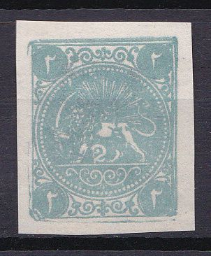
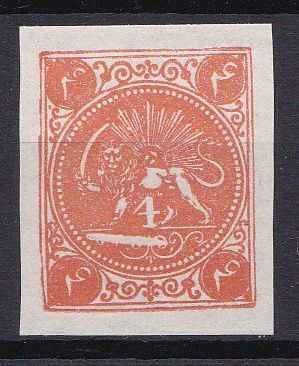
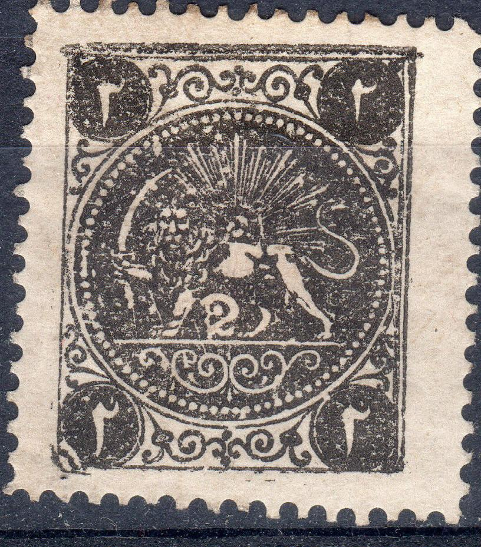
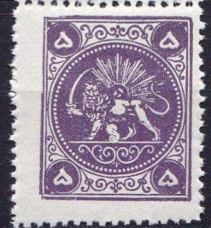
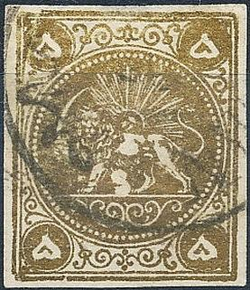

PERSIA Boital reprints of the 1868 issue
Currency: 1 Toman = 10 Kran = 200 Chahi (or
Shahi), after 1881: 1 Kran = 100 Centimes
Return To Catalogue -
Persia 1868 issue, forgeries, part 2 -
Persia 1868 issue, forgeries, part 3 -
Persia (Iran) 1868 issue
Note: on my website many of the
pictures can not be seen! They are of course present in the
catalogue;
contact me if you want to purchase the catalogue.
More information about stamps from Persia, forgeries etc. can
be found on: http://www.persi.com/fakes/fakes/fake.html,
http://fuchs-online.com/iran/lions-03.htm or
http://www.iranphilatelic.org/scams.htm. Also the book of
Friedrich Schuller 'Die Persische Post und de Postwerthzeichen
von Persien und Buchara' has much information.
Non official 'Reprints' made by the postmaster Boital when he
took some of the cliches to Paris to make enormous quantities of
reprints:





Boital reprints. I've seen minisheets of 10 of such reprints (2
rows of 5 stamps). I've also seen them with perforation. Note the
large scratch in the design under the lion in the 4 ch values.
The 1 ch value has two dots at both left and right sides of the
ornament below the lion; also it has a white circle around the
value in each corner. The 2 ch has a damaged bottom left corner.
If my information is correct, Mr.Boital, who was General
Postmaster of Persia, brought the printing plates of the first
stamps to Paris in 1886(?) and ordered reprints of all four
values. Usually they are printed on very white paper. They are
listed as 'Neudrucke' (reprints) in the book of Friedrich
Schuller.
Boital reprints of the 8 ch. Note that the '8' is very much
deformed and does not resemble any of the 4 genuine types and it
also does not resemble the Boital 8 ch reprints. There appear to
be two types of this forgery; with broken left bottom corner
(which appears to be the third stamp on the sheet, see below) and
without. I've seen them uncancelled or with "TEHERAN"
or "HAMADAN" cancels.
Minisheet of Boital reprints. They always seem to have been
printed in sheetlets of 10 stamps.

Forgeries made by the same forger?
Copyright by Evert Klaseboer


{kind=link}
{kind=link}
{kind=link}
{kind=link}
{kind=link}